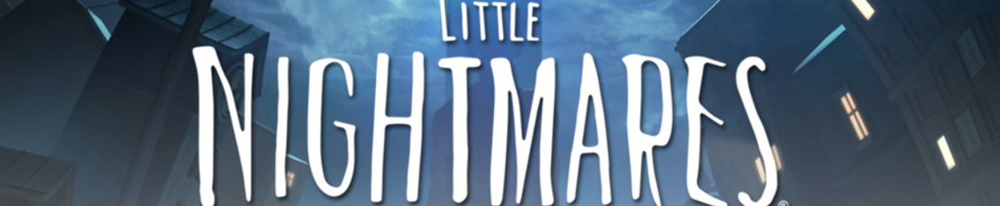

|
||||||||
|---|---|---|---|---|---|---|---|---|
|
小小梦魇1故事背景 在此我先列举一些一代和二代游戏中的剧情作为引入，首先是二代学校的陶瓷小孩，在Mono砸破小孩时，可以看到学校的那些学生身体全是空心的，而且极度喜欢恶作剧，哪怕那些恶作剧的成功会导致他们同伴的死亡，而他们却只是疯狂的大笑，在食堂也是疯狂的做着自己想做的事。其次是二代医院的假人，大部分假人无法动弹，小部分假人在无光照的情况下会对小六和Mono做出攻击反应。然后是二代的居民楼，人们都被电视所吸引丝毫不会在意周围的环境，而且一旦失去电视便会陷入寻找电视的疯狂中，而且所谓的电视完全没有任何画面，只是在特定的几个时间段，玩家可以听到电视机里面有一代贪厄号上的音乐声。以上是引入的画面，首先我们寻找里面的共同点，空心的小孩，没有任何思维的假人，痴迷无画面电视的人，这些都象征了一种没有思想内核的存在，宛若行尸走肉一般，后续我以灵魂代称这种思想内核。那先假定，我们认为没有灵魂的人会变为以上类。这里是否有值得我们思考的地方?为什么只有打破镜子才能生存?这镜子代表什么?在这个丑陋不堪，物欲横流的地方，人不会审视自己，也羞于审视自己。所以镜子就显得很多余，甚至碍事，然而打破了他，就只能在黑暗的路上愈行愈远。但是有别的出路吗?没有!所以有一句话在这不是玩笑——错的不是你，而是全世界。
|
|
|---|---|
| 小小梦魇2故事背景 小小噩梦的世界，玩家操作的这个主世界，是一个灵魂体的世界，对应噩梦的虚无主义标题，而电视机内部的世界才是真正的现实世界，拥有肉体的世界。而那些电视内部的长满眼睛的怪物则是外面那些人的肉体，因为长时间和灵魂分离，以及杂糅在一起化为了怪物般无意识的肉块。而灵魂世界的那些人之所以沉迷电视，可能是希望自己能重回肉体，而隔着屏幕能够感受到自己肉体的存在，才会一直守在电视旁边。游戏中有一个Mono跑过屋顶的镜头，一群人在屋顶，挨个跳下高楼，那些则是因为长时间分离，肉体已经完全怪物化，感觉不到和肉体联系的灵魂便会跳楼自杀。而肉体会慢慢崩坏，灵魂也是如此，如过灵魂破损后长时间没有得到灵魂的补充，则会变成像是医院假人，学校空心小孩一般的存在，所以人们才吞噬其他灵魂来补充自己的，以保证自己灵魂能够存活。 |